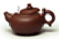

禅意人生
 当前位置： 首页> 参悟云居> 禅意人生
当前位置： 首页> 参悟云居> 禅意人生
妖艳于外,清静于心
类别: 禅意人生 发布时间: 2014年12月31日
一位年轻人热恋了4年的女友跟着一个商人跑了，感情遭到洗劫的年轻人痛不欲生，后来，终于不堪于感情的痛楚，选择在深山里一座寺院削发为僧，成了一名小沙弥。
那是一座香客盈门的寺院，为了接受香客们的布施，寺院的住持除了接受施主们的香火钱，还专门在寺院的园子里开了一块花圃，供施主们在佛前种些花草。
这片园子原来是一片荒芜的土地，一经开垦之后，很快生机盎然起来。来自全国各地的香客门手捧着一棵棵花草，像是擎着一炷炷芬芳的佛香，虔诚地铲土，施肥，烧水、埋土……没过多久，园子里一派姹紫嫣红，蜂蝶翩跹其间，煞是可人。
寺院里的僧人们闻着花香，看着美景，心情也十分舒畅，唯有小沙弥，终日愁眉紧锁，对着园子唉声叹气，住持看到了这样的情景，问小沙弥，别人都眉飞色舞地照料园子，为什么你半步也不敢接近那些花草啊?
小沙弥苦着脸说，住持，您不知道，园子里有许多不堪入目的花朵，例如，火红的杜鹃花、鲜艳的牡丹花，还有芍药、映山红，甚至还有玫瑰!佛门清净之地，怎能容得下这样烟火味充斥的花草，岂不是乱了僧人们的心性?
住持听了小沙弥的话后，不疾不徐地说了这样一句话，佛门清净之地，许多妖艳的女施主都可以进入，如果说乱心性，我们岂不是要关起门来，把许多香客拒之门外?我们出家人修的是心性，心若磐石，八风吹不动，心若柳絮，稍有气息便扬于山门之外了!
当天下午，小沙弥便被住持赶出了寺院。
收拾铺盖出门的瞬间，小沙弥自己也不解。但是，小沙弥想，天下之大，难道没有容身之处，他很快通过做苦力挣了些钱财，在寺院所在的山脚买了一问门面，专门销售佛香。一年后，他发迹了，娶了一位漂亮的女人为妻，他的妻子是位极富商业头脑的人，看到许多人上山拜佛都大老远带着花草到寺院栽种，于是，妻子和他商量，在后山开辟一块花圃，这样的花草，离寺院最近，最能接到神佛的灵根，香客们岂不是很愿意购买?
他接受了妻子的提议，但是，他和妻子约法三章，不能种颜色鲜艳的花朵，只能种些诸如茉莉之类的清淡花草。妻子一听就怒了，指着他的鼻子说，原来你还这么信佛啊，如果你这么信佛，还娶我干啥，还去当你的和尚就是了!
年轻人一听，瞬间不知所措，这时候，一位香客恰巧来他们店里请几炷佛香，听到他们的争吵之后，香客抚须而笑，香客说，我是个做药材的生意人，上次来这座寺院上香的时候，正值我生意亏本，连三炷香都请不起，当时，我是焚着了自己吃饭用的筷子许愿的，但是，照样灵验，而与我同行的一位富商捐了大批的钱财，最终还是生意亏损，还招来了牢狱之灾，因为，他是个毒贩子。住持告诉我，只要六根清净，处处皆见莲花开……
年轻人瞬间醍醐灌顶，后来，年轻人在山脚开了一家花草店，取名“六根清净”，许多香客们都从年轻人的花圃里挖出花草，发现这些花草的根部泥污不堪，争相打趣他说，你这分明的“六根不净”啊?
年轻人笑着说，六根不在花草上，六根是在我们心里啊!
时光更迭，转眼60年过去了，当年的小伙子已经成了一位须发皆白的老人，妻子也早已归西，只剩下他孑然一人，他一生事佛，做事皆善事，所以，山上寺庙的住持也换了多人，但是，每一位方丈都会告诉香客们，除了到寺院拜佛，也别忘记到山脚的花店去拜一拜那位须发皆白的老者，因为，山上为“泥香佛”，山脚的才是“活佛”啊!
后来，活佛圆寂后，人们在他的花店发现了六颗耀眼的合利子，再后来，花店变成了“六根寺”，成了万千香客必去拜访的第一站……
至今，六根寺的大殿里还放着活佛的手书：“妖艳于外，清净于心。”这八个字，正是活佛留给世人的不朽智慧莲花一一从排斥到接受，从烦恼到欢喜，周围世界没有变，改变的是人心。心宽了，心净了，自然就容下了万物，也容下了理想和幸福。